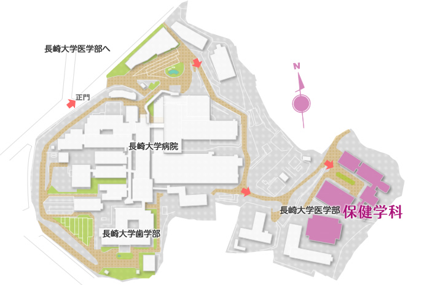

路面電車
長崎駅前から長崎電気軌道1系統（赤迫行き）に乗車し、「長崎大学」電停下車。所要時間約10分、運賃150円。
路線バス
県庁前（長崎県庁前）から8番線バス乗車、「長崎大学医学部前」バス停下車。所要時間約12〜15分。
JR利用
JR長崎駅下車後、路面電車（赤迫行き）に乗り換え「長崎大学」電停下車。長崎駅からの所要時間約10分。
お車
長崎自動車道・長崎ICから赤迫交差点経由で長崎大学坂本キャンパスへ。構内駐車場は有料（800円）。公共交通機関のご利用を推奨します。
